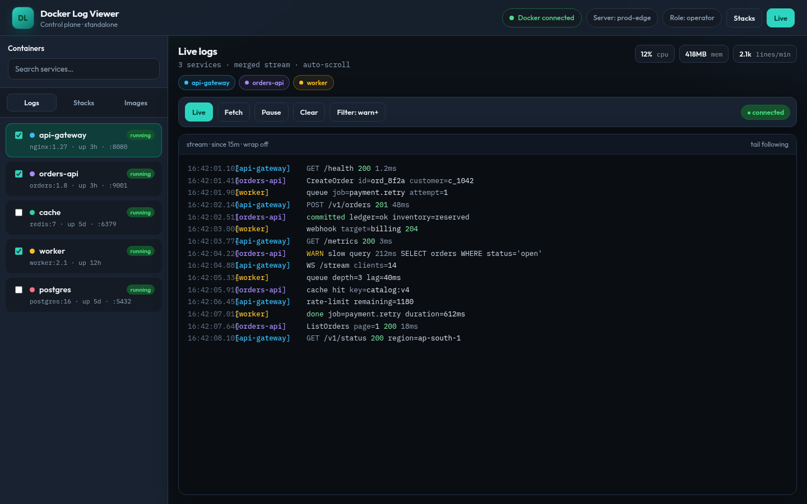

⚡
Live log streams
WebSocket tails with pause, reconnect, time ranges, and multi-container merge.
Self-hosted · apt & dnf · multi-host
DockBeacon
One browser tab instead of a pile of SSH sessions. Not a replacement for Loki or ELK — for “what is happening on my Docker hosts right now.”
curl -fsSL https://govindsingh9447.github.io/docker-log-viewer-packages/install-apt.sh | sudo bash sudo apt-get install docker-log-viewer
curl -fsSL https://govindsingh9447.github.io/docker-log-viewer-packages/install-yum.sh | sudo bash sudo dnf install docker-log-viewer
Quick install adds the repo. Prefer to inspect first? See Install. Then open http://<host>:9447 — zero-config HTTP for lab and staging. Production uses an HTTPS reverse proxy in front of the same port.

Built for people who run real Docker hosts — not another cloud dashboard.
WebSocket tails with pause, reconnect, time ranges, and multi-container merge.
Toggle compact or indented JSON with bright syntax colors — regex search too.
Merge agents into one view. Group prod hosts and follow them together.
Live stats beside the logs, with simple history sparklines.
Compose lifecycle, env edits, and viewer / operator / admin roles.
systemd unit included. Open http://<host>:9447 with no TLS setup. Flip APP_MODE between standalone and agent.
docker logs?It’s perfect — until your third SSH tab, second host, and first “wait, which terminal was prod?” moment.
docker stats
Not competing with Loki or ELK on analytics — see where this fits.
Multi-host log aggregation without standing up a centralized log-storage platform. Same package on every host — flip APP_MODE.
Use this when you need to see what is happening across Docker hosts right now, without building a full observability stack.
| Tool | Best for |
|---|---|
docker logs | Quick troubleshooting on one container |
| Dozzle | Lightweight real-time container logs |
| DockBeacon | Live multi-host operations: logs + metrics + Compose + RBAC |
| Loki | Centralized log storage and query |
| ELK / OpenSearch | Large-scale log analytics and search |
| Datadog | Full SaaS observability |
If this is reachable on a production network, a stolen session is more than log access — operators can restart containers and edit Compose / .env. Treat it like a host admin tool.
Login required. Passwords stored as bcrypt hashes. Sessions are HMAC-signed cookies: HttpOnly, SameSite=Lax, Secure via COOKIE_SECURE=auto (honors X-Forwarded-Proto), 24h TTL. Optional OIDC SSO. Login rate-limited. APIs also accept X-Auth-Token, Bearer, or HTTP Basic.
viewer — logs, inspect (secrets masked), switch hostsoperator — restart, Compose lifecycle, env edits, inspect secretsadmin — operators plus user management and audit tailEach agent has its own users file. Agents require CORS_ORIGINS (fail closed when unset). The control-plane UI signs in per host.
Lab listens on LISTEN_ADDR=0.0.0.0:9447 by default. Production: LISTEN_ADDR=127.0.0.1 and terminate TLS on Nginx/ALB. No in-process TLS.
Packaged unit runs as docker-log-viewer in group docker (not root). Socket access is still full Engine power — optionally put docker-socket-proxy in front and set DOCKER_HOST.
Stack env keys matching password / token / key names are masked until revealed. Container inspect env is masked for viewers. Writes stay under PROJECTS_DIR.
Double-submit CSRF (dlv_csrf + X-CSRF-Token) on mutating cookie-auth requests. WebSocket Origin checked against CORS_ORIGINS. Password changes require the current password.
Privileged actions append JSON audit lines (AUDIT_LOG_PATH, also journal). Admins can GET /api/audit. Package repos are GPG-signed when GPG_PRIVATE_KEY is configured in release CI; otherwise SHA256SUMS + inspect-then-install.
Same binary everywhere: HTTP on :9447. Lower environments open that URL directly. Production adds TLS at Nginx / ALB in front.
LISTEN_ADDR=127.0.0.1 in production. Agents should not be reachable from the public internet — only from the control plane.127.0.0.1:9447. Enable WebSocket upgrade for /wslogs and /ws/project/watch. Set COOKIE_SECURE=auto.docker-log-viewer (not root), group docker. Config: /etc/docker-log-viewer/docker-log-viewer.env. Data: /var/lib/docker-log-viewer/.AUTH_USER/AUTH_PASS only on first boot, or configure OIDC. Back up /var/lib/docker-log-viewer/. Optional: docker-socket-proxy to shrink Engine API surface.apt-get install --only-upgrade docker-log-viewer or dnf upgrade. Env file survives. Roll back from the package pool.Step-by-step Nginx snippet and RBAC details: User guide → Production.
apt or dnf, configure once, enable systemd.
Latest notes on this package feed.
Upgrade: sudo apt-get update && sudo apt-get install --only-upgrade docker-log-viewer
or sudo dnf upgrade docker-log-viewer
Quick install adds the repo. Inspect the script first on production hosts.
curl -fsSL https://govindsingh9447.github.io/docker-log-viewer-packages/install-apt.sh | sudo bash sudo apt-get install docker-log-viewer
curl -fsSL https://govindsingh9447.github.io/docker-log-viewer-packages/install-apt.sh -o install-apt.sh less install-apt.sh sudo bash install-apt.sh sudo apt-get install docker-log-viewer
echo 'deb [trusted=yes] https://govindsingh9447.github.io/docker-log-viewer-packages/apt stable main' | sudo tee /etc/apt/sources.list.d/docker-log-viewer.list sudo apt-get update sudo apt-get install docker-log-viewer
curl -fsSL https://govindsingh9447.github.io/docker-log-viewer-packages/install-yum.sh | sudo bash sudo dnf install docker-log-viewer
curl -fsSL https://govindsingh9447.github.io/docker-log-viewer-packages/install-yum.sh -o install-yum.sh less install-yum.sh sudo bash install-yum.sh sudo dnf install docker-log-viewer
sudo tee /etc/yum.repos.d/docker-log-viewer.repo <<'EOF' [docker-log-viewer] name=DockBeacon baseurl=https://govindsingh9447.github.io/docker-log-viewer-packages/yum enabled=1 gpgcheck=0 EOF sudo dnf install docker-log-viewer
Packages are GPG-signed when the release pipeline has GPG_PRIVATE_KEY configured (install scripts use signed-by / gpgcheck=1).
Always verify SHA256SUMS.txt. Public key: KEY.gpg (present on signed publishes).
Config survives upgrades (noreplace).
sudo nano /etc/docker-log-viewer/docker-log-viewer.env # APP_MODE=standalone # or agent # SERVER_NAME=my-host # PROJECTS_DIR=/home/ubuntu/backend # PORT=9447 sudo systemctl enable --now docker-log-viewer # lab / staging: http://<host>:9447 # production: https://logs.example.com → proxy → 127.0.0.1:9447
Private source. This site hosts packages.
Collaborators with repo access can also use gh release download.
One install. No SaaS account. Logs stay on your network.
Install DockBeacon